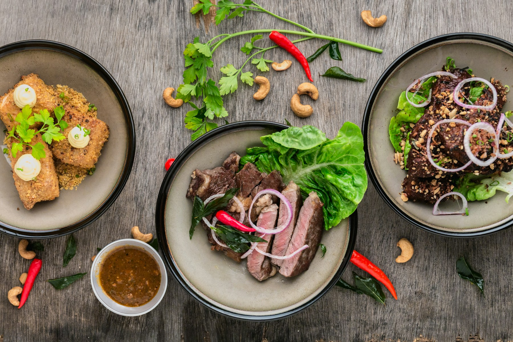

Le fait maison
Des recettes préparées avec attention pour préserver le goût et la générosité des plats.
Des plats faits maison
Traiteur à Bordeaux : des menus généreux, préparés avec soin pour vos événements et à commander en quelques clics.
Vite et Gourmand
Depuis 25 ans, Julie et José partagent leur goût des recettes conviviales et des produits bien choisis. Leur savoir-faire s'est construit autour d'une idée simple : proposer une cuisine généreuse, préparée avec soin et facile à partager.
Installés à Bordeaux, ils accompagnent vos grands rendez-vous : mariages, anniversaires, repas d'entreprise et fêtes de famille. Chaque menu est pensé pour offrir une expérience chaleureuse, de la première à la dernière bouchée.

Ce qui nous guide
Des recettes préparées avec attention pour préserver le goût et la générosité des plats.
Une équipe à l'écoute des besoins de chaque client, à Bordeaux et dans ses alentours.
Des formules pensées pour créer de beaux moments autour d'une table.
Votre expérience
Les avis publiés apparaîtront ici.
Votre espace
Retrouvez vos commandes et suivez vos prestations depuis votre espace personnel.
Une question ?
Notre équipe est à votre écoute pour vous accompagner dans votre commande.